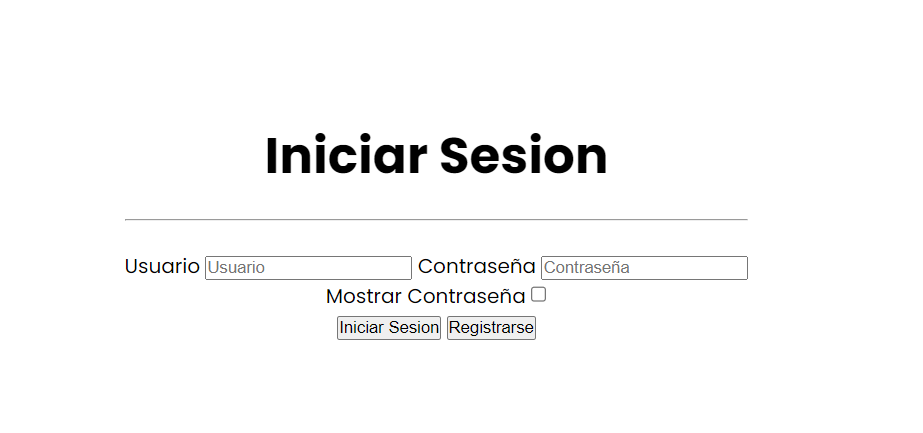

Esta guía te explicara como utilizar la pagina web Mamá Coco en su máximo esplendor.
La pagina web Mamá Coco lo que busca es la facilidad de poder determinar que cocinar hoy y como hacer la receta elegida con el paso a paso de cada receta.
Aquí tenemos 4 opciones las cuales al hacer click derecho con el mouse hará una acción diferente.
Inicio: Esta te llevara al inicio de la pagina.
Recetas: Al hacer click te llevara a una sección la cual tendrás diferentes recetas para elegir y poder hacer.
Iniciar Sesion Te dara la opcion de iniciar sesion y poder tener tu propio. usuario. De no tener una cuenta te podrás registrar al darle el click al boton de registrar.
Manual de Usuario: Te llevara a este manual de usuario el cual te explicara todos los detalles de esta pagina web.
En esta sección vamos a ver recetas al azar dependiendo del horario del día. El cual te llevara a la receta seleccionada.
Aquí tendrás nuestra información de contacto por cualquier inconveniente si no pudimos ayudarte a resolver algún problema.